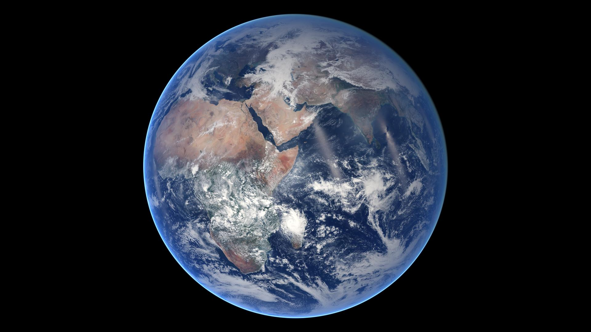

Енергія
Сонце нагріває поверхню нерівномірно. Від поверхні нагрівається нижнє повітря, формуються температурні контрасти.
Не повторюємо визначення списком — працюємо як метеорологи: читаємо дані, пояснюємо механізми, перевіряємо докази й робимо прогноз.

За умовами нижче визначте найбільш обґрунтований висновок.
Натискайте блоки у правильному порядку: чому після сильного нагрівання вологої поверхні можуть з’явитися купчасто-дощові хмари?
Ваш ланцюг: —
Перемикайте на Windy шари вітер, температура, тиск, хмари, опади. Оберіть будь-які дві точки України та сформулюйте різницю щонайменше за трьома елементами погоди.

Ситуація: тиск за 6 годин знизився з 1018 до 1008 гПа, вітер посилився з 3 до 8 м/с, відносна вологість зросла з 55% до 78%, із заходу насувається суцільна хмарність.
Доказове питання: чому падіння тиску саме по собі слабше за сукупність кількох незалежних ознак?
Натисніть картку, щоб класифікувати її.
Сонце нагріває поверхню нерівномірно. Від поверхні нагрівається нижнє повітря, формуються температурні контрасти.
Різниця тиску спричиняє рух повітря. Вітер називають за напрямком, звідки він дме.
Випаровування додає водяну пару. Охолодження до насичення сприяє конденсації, хмарам, туману й опадам.
Це стан атмосфери у певному місці й часі: температура, тиск, вітер, вологість, хмарність, опади.
Це багаторічні закономірності погоди. Один день або одна аномалія не описують клімат.
Сильний висновок спирається на кілька узгоджених даних і пояснений механізм, а не на одну ознаку.
Питання: «Чи достатньо одного показника атмосферного тиску, щоб надійно передбачити погоду?»
За КТП: повторіть тему «Атмосфера». Для самоперевірки відкрийте електронний підручник/матеріали ВШО та оберіть будь-яку сьогоднішню погодну карту: запишіть 3 спостереження і 1 обґрунтований висновок.